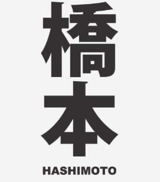

My name is Kay Hashimoto; I am from Seattle, WA. I created this site as part of my coursework for Epicodus, a school for aspiring programmers. I graduated with a Bachelor of Arts from The Evergreen State College in 2016 where I focused on Media, Fine Arts, and Cultural Studies.
My background is in traditional art mediums (Drawing, papercrafts and mixed media), writing and editing, non-profit work, and photography. I think programming is really interesting and recognize the importance of gaining technical skills in today's current job market. Seattle especially has a bustling tech economy. I believe I have a lot of unique experience and qualities to offer future employers, even though I do not have a traditional tech background. Professionals in technical fields shoudl represent a great diversity of backgrounds and ideas. I hope to find a role which is both creative and challenging. My interests, hobbies and skills